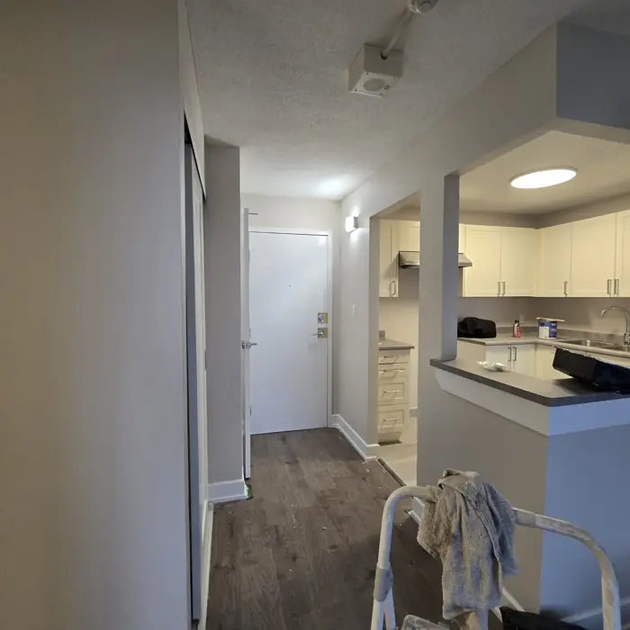

Painting · Drywall repair · Plaster · Kitchener-Waterloo
Walls repaired right, then painted clean.
SoOptimal Contracting fixes damaged drywall and plaster and paints interiors for homeowners, landlords and property managers in Kitchener, Waterloo, Cambridge and Guelph. One contractor for the repair and the paint.
- Free written quotes
- Repair and paint by one contractor
- Liability insured, WSIB covered
- Real photos from our own jobs
One apartment unit, October 2026
Before, during and after. Same job.


Services
What we do
Drywall repair
Holes, cracks, water stains, torn paper and bad old patches.
See details
Drywall installation
We hang board on walls and ceilings, including vaulted ceilings, bulkheads and wet areas, then tape and finish it ready for paint.
See details
Plaster repair
Plaster cracks, bulges and crumbling corners can usually be saved.
See detailsInterior painting
Paint only looks as good as the wall under it.
See details
Taping and finishing
Board is up and you need it finished.
See details
Rental unit turnovers
A vacant unit earns nothing.
See detailsHow we work
The person who quotes your job does your job.
SoOptimal is owner-operated. You deal with one person from the first photo to the final walk-through, and that person is on the tools.
- Send photos or book a visitText pictures and rough sizes. Bigger jobs get a site visit.
- Get a written priceThe quote lists what is included, what is not, and the start date.
- We protect, repair and paintFloors covered, repairs done properly, two coats, daily clean-up.
- Walk through before you payWe check every room together and fix anything you point at.
Who you are hiring
Insured, covered and trained for the job.
SoOptimal Contracting is run by Fernand Havugimana, who has worked in drywall since 2019, first as an installer and then on commercial and multi-unit renovation sites as a painting and drywall subcontractor. He holds an engineering technology diploma and a BSc, and quotes the way an engineer would: measured, written down and itemised.
- Commercial general liability insuranceCertificate of insurance sent on request before work starts.
- WSIB coverageClearance certificate available for property managers and contractors.
- Working at Heights certifiedOntario-approved training for ladders, scaffolds and high ceilings.
- Aerial lift certifiedTrained to operate boom lifts for stairwells, atriums and commercial spaces.
- WHMIS trainedSafe handling of paints, primers, solvents and compounds.
- Registered Ontario businessHST-registered. You get a proper invoice for every job.
Landlords and property managers
Vacant units turned around with a fixed price and a photo report.
Per-unit pricing by bedroom count. Tenant damage repaired, full repaint, dated before and after photos of every room attached to the invoice. One unit or a whole floor.
Turnover service detailsQuestions
Common questions
What does SoOptimal Contracting do?
SoOptimal Contracting is a painting and drywall contractor based in Kitchener-Waterloo, Ontario. Services are interior painting, drywall installation, drywall repair, plaster repair, drywall taping and finishing, and apartment turnover painting for landlords and property managers.
Which areas do you serve?
Kitchener, Waterloo, Cambridge and Guelph for all services. Kingston, Ontario for multi-unit residential and property management projects.
How do I get a quote?
Text photos of the job to (343) 305-1787 or use the quote form. Most painting and repair jobs get a written price within one business day. Larger jobs get a site visit first. Quotes are free.
Do you do small jobs?
Yes. A single hole, one cracked ceiling or one room is fine. Small repairs are often quoted from photos and done in one or two visits.
Can you repair the wall and paint it too?
Yes. Repair and paint are quoted together and done by the same contractor, so the patch is primed and painted properly and you only book one trade.
Are you insured?
Yes. SoOptimal Contracting carries commercial general liability insurance and WSIB coverage. A certificate of insurance and a WSIB clearance certificate are available on request. The owner is also Working at Heights, aerial lift and WHMIS trained.
Do you work with landlords and property managers?
Yes. We offer fixed per-unit turnover pricing by bedroom count, with before and after photos of every room attached to each invoice.
Send photos, get a price
Most jobs are quoted within one business day.